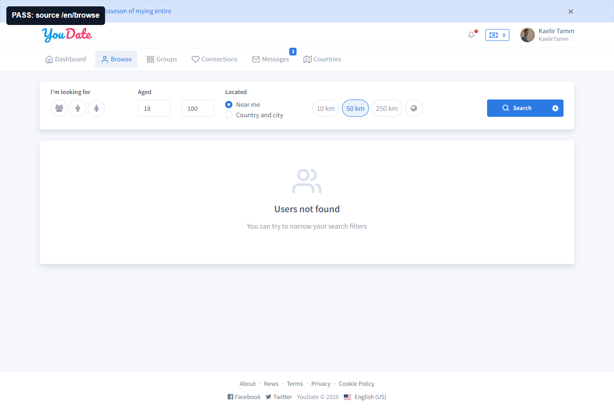
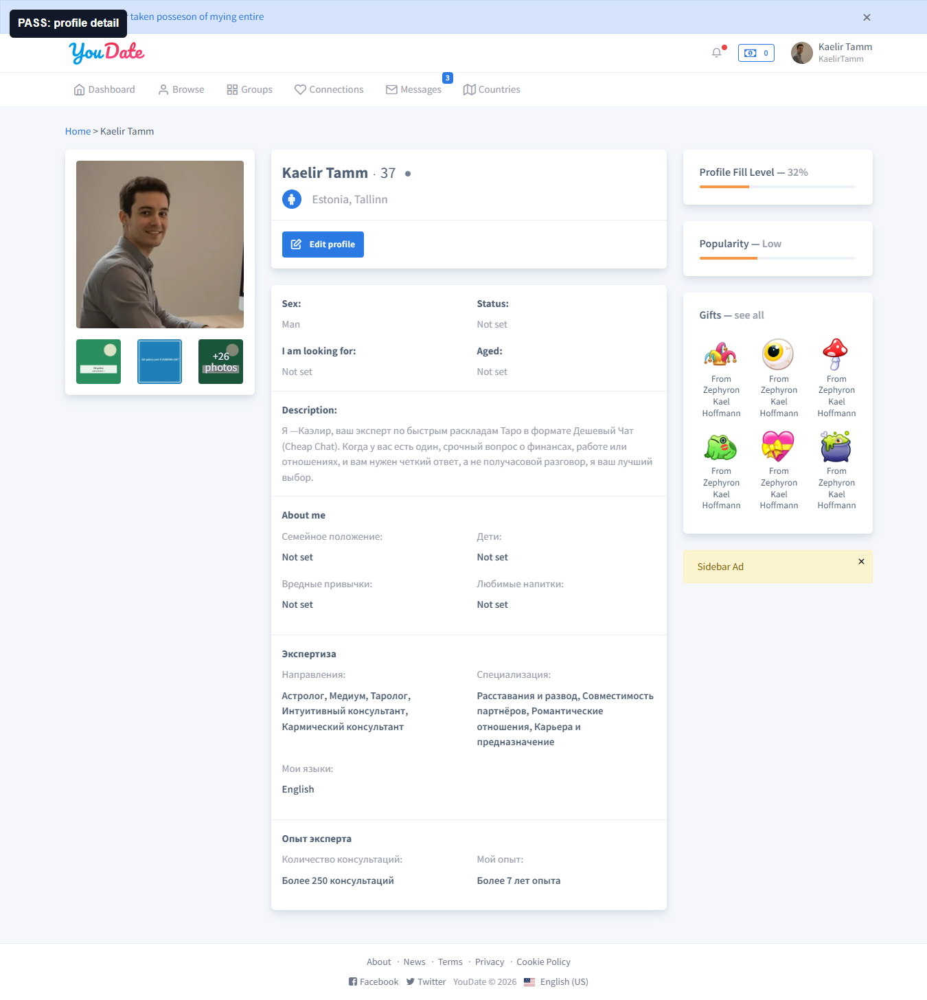
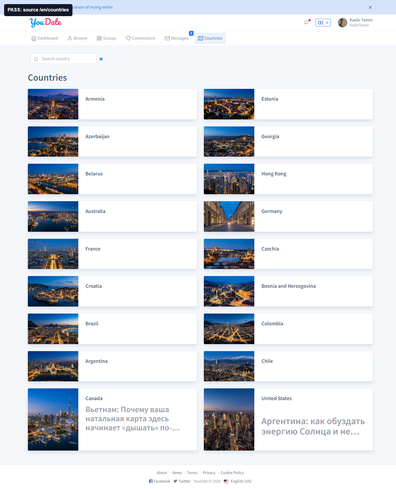
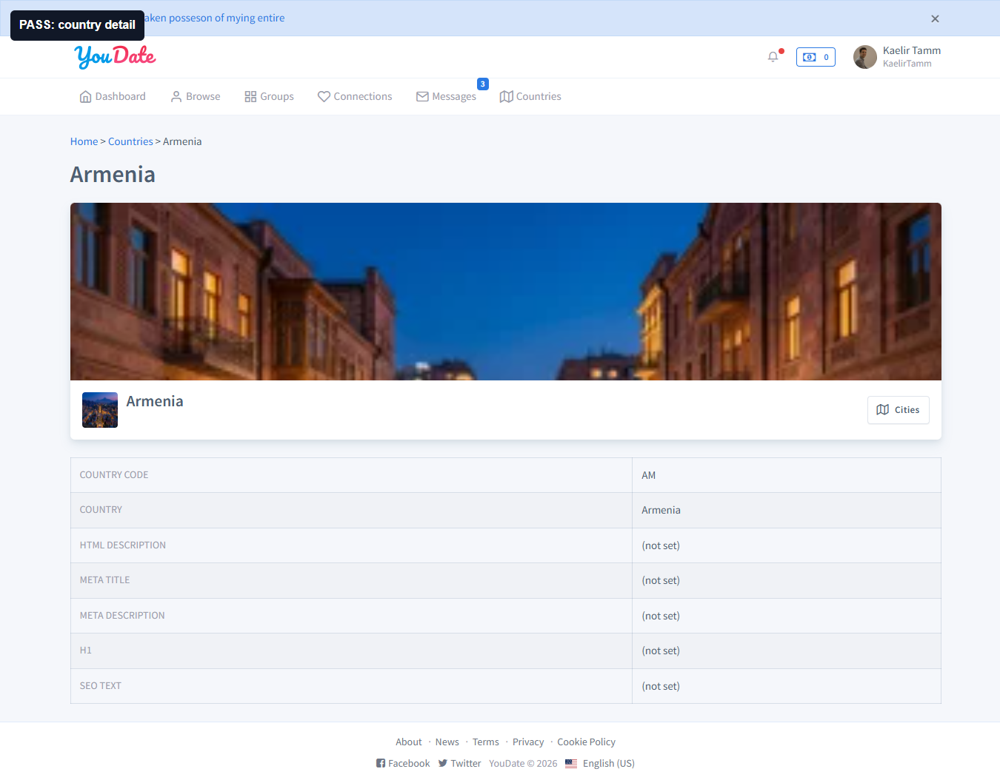
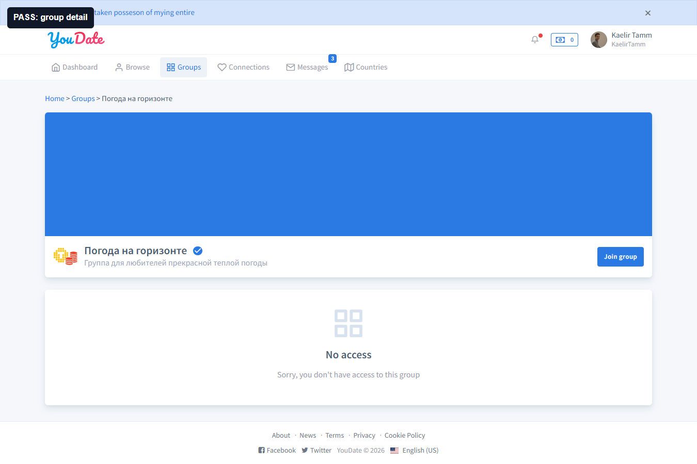

PASS
Browse source
Что тестировал: источник profile detail-ссылок. Что получил: `/en/browse` открыт корректно, но список пользователей пустой; тест не стал считать скрытые/пустые ссылки пользовательским дефектом.

Confideline QA/BA · 2026-05-10
Проверка следующего слоя после discovery: реальные видимые ссылки из каталогов открываются как detail-страницы. Прогон выполнен в отдельной QA Chrome/CDP-сессии, без общего браузера пользователя.
Подтвержденных дефектов для Игоря нет.
1 профиль, 3 страны, 3 группы.
Нет воспроизводимого FAIL.
BA-рекомендация по языку EN-разделов.
Новых подтвержденных дефектов нет. Скрипт проверял только видимые ссылки с DOM evidence: координаты, текст, href и HTML-фрагмент. После этого открыты detail-страницы профиля, стран и групп; 404/500/login redirect не получены.
Подозрение на `/en/profile/view` из предыдущего сырого прогона не отправляется в работу: оно не прошло критерий видимой пользовательской ссылки. Источник правды по этому блоку: этот отчет и raw JSON.
| Квадрант | Зона | Наблюдение | Почему важно | Совет | Как проверить готовность |
|---|---|---|---|---|---|
| Важно, но не срочно | Контент / локализация EN-разделов | На `/en/countries`, `/en/profile` и части `/en/groups/...` заметен русский текст. | Для англоязычного пользователя смешение языков снижает доверие, ухудшает SEO и усложняет приемку EN-версии. | Принять product decision: либо EN-контур сейчас считается технически рабочим, но контентно не готовым; либо завести отдельную задачу на разделение контента по языкам. | На `/en/...` основной контент на английском, либо такие страницы явно помечены как content backlog и не блокируют техническую приемку. |
| Статус | Тип | URL | Что проверял | Что получил |
|---|---|---|---|---|
| PASS | Profile | /en/profile | Видимая ссылка из верхней панели профиля. | 200, h1 Kaelir Tamm, страница профиля открыта. |
| PASS | Country | /en/country/armenia | Переход из списка стран. | 200, h1 Armenia. |
| PASS | Country | /en/country/estonia | Переход из списка стран. | 200, h1 Estonia. |
| PASS | Country | /en/country/azerbaijan | Переход из списка стран. | 200, h1 Azerbaijan. |
| PASS | Group | /en/groups/pogoda-na-gorizonte | Переход из карточки группы. | 200, h1 Погода на горизонте. |
| PASS | Group | /en/groups/gruppa-dla-sbora-deneg | Переход из карточки группы. | 200, открывается purchase/access state. |
| PASS | Group | /en/groups/test | Переход из карточки группы. | 200, открывается purchase/access state. |
Что тестировал: источник profile detail-ссылок. Что получил: `/en/browse` открыт корректно, но список пользователей пустой; тест не стал считать скрытые/пустые ссылки пользовательским дефектом.

Что тестировал: видимая ссылка на собственный профиль. Что получил: страница открыта, но внутри EN-route много русского текста. Это не задача Игорю без product decision.

Что тестировал: список стран на `/en/countries`. Что получил: ссылки стран работают, но ниже списка виден большой русский контент на EN-странице.

Что тестировал: переход в страну из списка. Что получил: `/en/country/armenia` открылась с h1 Armenia и без 404/login redirect.

Что тестировал: карточки групп и реальные href формата Yii2 `groups/<alias>`. Что получил: карточки видны, ссылки собраны по фактическому DOM.

Что тестировал: переход в группу из каталога. Что получил: `/en/groups/pogoda-na-gorizonte` открывается; смешанный язык остается контентным вопросом для EN-контура.
